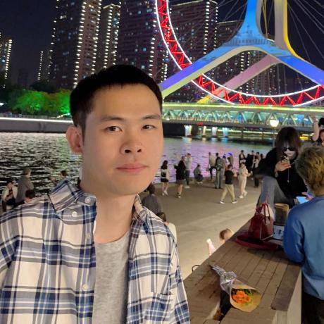
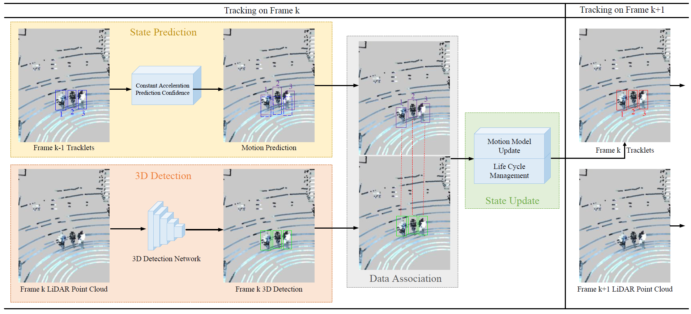
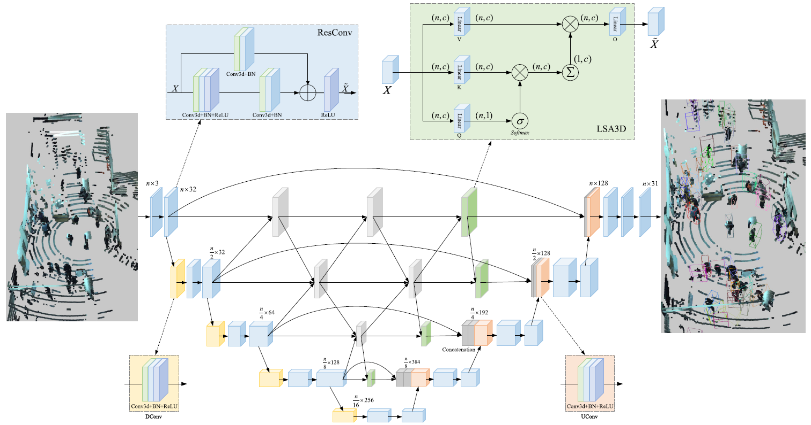
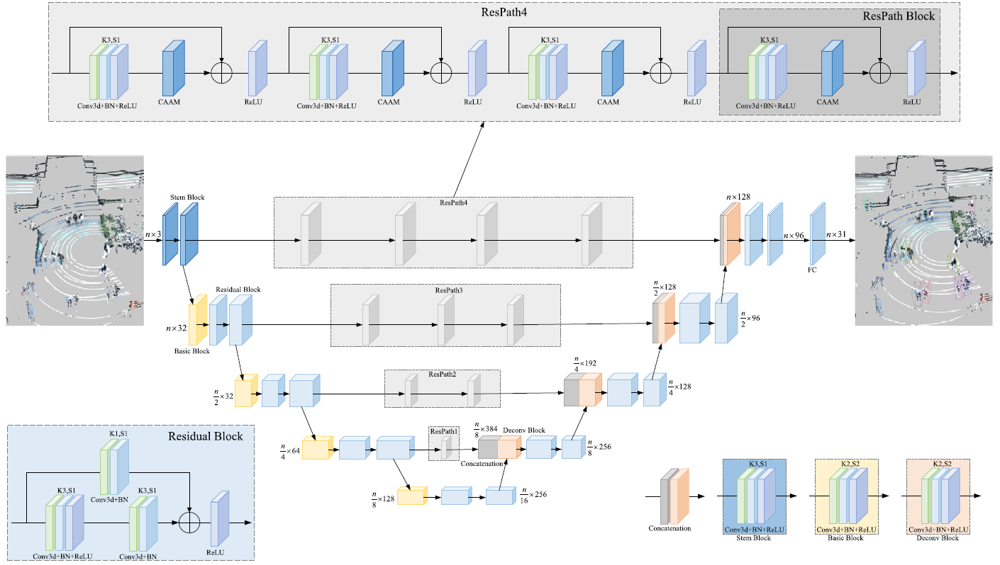

|
 |
Jinzheng Guang 光金正 |
I am currently a PhD candidate at Nankai University, Tianjin, China. My research interests focus on computer vision and machine learning, particularly in applying machine learning to autonomous driving and mobile robots. This includes 3D perception, 3D object detection and tracking, LiDAR point cloud segmentation, multimodal fusion, and other topics.
guangjinzheng@mail.nankai.edu.cn
guangjinzheng@qq.com
|  |
ELPTNet: An Efficient LiDAR-based 3D Pedestrian Tracking Network for Autonomous Navigation Social Robots |
|  |
DCCLA: Dense Cross Connections with Linear Attention for LiDAR-based 3D Pedestrian Detection |
|  |
RPEA: A Residual Path Network with Efficient Attention for 3d Pedestrian Detection from LiDAR Point Clouds |
Reviewer:
IEEE Transactions on Intelligent Transportation Systems (TITS)
MDSLCA ranks No.1 on the SemanticKITTI 3D Semantic Segmentation, 05/2025 Keep striving for excellence 不断追求卓越
IEEE Robotics and Automation Letters (RA-L)
AAAI Conference on Artificial Intelligence (AAAI)
IEEE/RSJ International Conference on Intelligent Robots and Systems (IROS)
IEEE Transactions on Circuits and Systems for Video Technology (TCSVT)
Expert Systems With Applications (ESWA)
Academic Competition and Awards
ELPTNet ranks No.1 on the JRDB 3D Tracking Leaderboard, 03/2025
DRFDFF ranks No.1 on the JRDB 3D Tracking Leaderboard, 06/2024
DCCLA ranks No.1 on the JRDB 3D Detection Leaderboard, 11/2023
RPEA ranks No.1 on the JRDB 3D Pedestrian Detection Leaderboard, 07/2023
National Scholarship
First-Class Graduate Scholarship
© Jinzheng Guang, 2022 - 2025